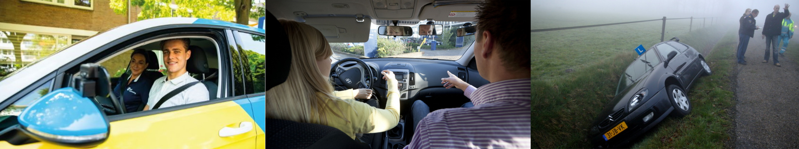

(06)--- --- --
(06)--- --- --
Ma - Zo 8:00 - 22:00
Dashboard

PROEFLES
Weet u het nog niet zeker maar wilt u het toch even proberen bij flexi. Dat kan, want met een verblijdende intakeles zit jij nergens aan vast. Jij voelt meteen of er een klik is tussen jou en de rijinstructeur, Is er geen klik, dan zijn er nog andere FLEXi rijinstructuer. Ook bij andere rijinstructeur geldt de vrijblijvende intakeles! Wel zo mooi.
LOCATIES
Onze rijinstructeurs zijn verspreid over wel bijna heel Nederland. Er is dus bijna altijd wel een rijinstructeur bij jou in de buurt. Is er bij jou in de buurt nog geen FLEXi rijschool. Bel dan even ons. Wij kijken samen of we toch een FLEXi rijinstructeur voor jou kunnen regelen. Klik
hier voor de locaties
RIJLESSEN
De rijlessen van FLEXi worden op vasis van een instructiekaart voorbereid en uigevoerd. Op de instructiekaar houdt de FLEXi rijinstructeur jouw vorderingen in de gaten. Ook gebruiken de meeste FLEXi rijinstructeurs een dashcam, zodat de les of een deel van de les teruggekeken kan worden. Hier halen jij en jou FLEXi rijinstructeur de pos en nav en bespreekt dit met jou